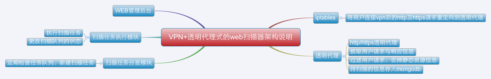

基于vpn和透明代理的web漏洞扫描器的实现¶
概述¶
Note
Transparent-Proxy-Scanner是一个基于vpn和透明代理的web漏洞扫描器，本文是vpn + 透明代理式的web漏洞扫描器的实现的简单说明。 用户连接vpn后访问网站时就会把网站的请求与响应信息保存到mongodb中，然后web扫描器从数据库中读取请求信息并进行扫描。
架构说明¶
透明代理的实现¶
透明代理是在 https://github.com/xiam/hyperfox 这个项目的基础上改的，hyperfox是go语言实现的一个http/https的透明代理。
hyperfox本来是用 upper.io/db 这个orm将数据存入sqlite中的，我个人比较喜欢mongodb，于是就改成将数据存入mongodb中。
依赖包安装¶
1 2 3 4 5 | go get github.com/netxfly/Transparent-Proxy-Scanner/hyperfox
go get github.com/toolkits/slice
go get upper.io/db
go get github.com/gorilla/mux
go get menteslibres.net/gosexy/to
|
透明代理的部分实现代码¶
1 2 3 4 5 6 7 8 9 10 11 12 13 14 15 16 17 18 19 20 21 22 23 24 25 26 27 28 29 30 31 32 33 34 35 36 37 38 39 40 41 42 43 44 45 46 47 48 49 50 51 52 53 54 55 56 57 58 59 60 61 62 63 64 65 66 67 68 69 70 71 72 73 74 75 76 77 78 79 80 81 82 83 84 85 86 87 88 89 90 91 92 93 94 95 96 97 98 99 100 101 102 103 104 105 106 107 108 109 110 111 112 113 114 115 116 117 118 119 120 121 122 123 124 125 126 127 128 129 130 131 132 133 134 135 136 137 138 139 140 141 142 143 144 145 146 147 148 149 150 151 152 153 154 155 156 157 158 159 160 161 162 163 164 165 166 167 168 169 170 171 172 173 174 175 176 177 178 179 | package main
import (
"flag"
"fmt"
"github.com/netxfly/Transparent-Proxy-Scanner/hyperfox/proxy"
"github.com/netxfly/Transparent-Proxy-Scanner/hyperfox/tools/capture"
"strings"
// "github.com/netxfly/Transparent-Proxy-Scanner/hyperfox/tools/logger"
"github.com/toolkits/slice"
"log"
"net/http"
"net/url"
"os"
"time"
"upper.io/db"
"upper.io/db/mongo"
)
const version = "0.9"
const (
defaultAddress = `0.0.0.0`
defaultPort = uint(3129)
defaultSSLPort = uint(3128)
)
const (
Host = "127.0.0.1"
Port = "27017"
User = "xsec"
Password = "x@xsec.io"
Database = "passive_scan"
)
var settings = mongo.ConnectionURL{
Address: db.Host(Host), // MongoDB hostname.
Database: Database, // Database name.
User: User, // Optional user name.
Password: Password, // Optional user password.
}
var (
flagAddress = flag.String("l", defaultAddress, "Bind address.")
flagPort = flag.Uint("p", defaultPort, "Port to bind to, default is 3129")
flagSSLPort = flag.Uint("s", defaultSSLPort, "Port to bind to (SSL mode), default is 3128.")
flagSSLCertFile = flag.String("c", "", "Path to root CA certificate.")
flagSSLKeyFile = flag.String("k", "", "Path to root CA key.")
)
var (
sess db.Database
col db.Collection
)
var (
static_resource []string = []string{"js", "css", "jpg", "gif", "png", "exe", "zip", "rar", "ico",
"gz", "7z", "tgz", "bmp", "pdf", "avi", "mp3", "mp4", "htm", "html", "shtml"}
)
// dbsetup sets up the database.
func dbsetup() error {
var err error
// Attemping to establish a connection to the database.
sess, err = db.Open(mongo.Adapter, settings)
fmt.Println(sess)
if err != nil {
log.Fatalf("db.Open(): %q\n", err)
}
// Pointing to the "http_info" table.
col, err = sess.Collection("http_info")
return nil
}
// filter function
func filter(content_type string, raw_url string) bool {
ret := false
if strings.Contains(content_type, "text/plain") || strings.Contains(content_type, "application/x-gzip") {
url_parsed, _ := url.Parse(raw_url)
path := url_parsed.Path
t := strings.Split(path[1:], ".")
suffix := t[len(t)-1]
if !slice.ContainsString(static_resource, suffix) {
ret = true
}
}
return ret
}
// Parses flags and initializes Hyperfox tool.
func main() {
var err error
var sslEnabled bool
// Parsing command line flags.
flag.Parse()
// Opening database.
if err = dbsetup(); err != nil {
log.Fatalf("db: %q", err)
}
// Remember to close the database session.
defer sess.Close()
// Is SSL enabled?
if *flagSSLPort > 0 && *flagSSLCertFile != "" {
sslEnabled = true
}
// User requested SSL mode.
if sslEnabled {
if *flagSSLCertFile == "" {
flag.Usage()
log.Fatal(ErrMissingSSLCert)
}
if *flagSSLKeyFile == "" {
flag.Usage()
log.Fatal(ErrMissingSSLKey)
}
os.Setenv(proxy.EnvSSLCert, *flagSSLCertFile)
os.Setenv(proxy.EnvSSLKey, *flagSSLKeyFile)
}
// Creatig proxy.
p := proxy.NewProxy()
// Attaching logger.
// p.AddLogger(logger.Stdout{})
// Attaching capture tool.
res := make(chan capture.Response, 256)
p.AddBodyWriteCloser(capture.New(res))
// Saving captured data with a goroutine.
go func() {
for {
select {
case r := <-res:
if filter(r.ContentType, r.URL) {
// fmt.Println(r.Method, r.URL, r.ContentType)
if _, err := col.Append(r); err != nil {
log.Printf(ErrDatabaseError.Error(), err)
}
}
}
}
}()
cerr := make(chan error)
// Starting proxy servers.
go func() {
if err := p.Start(fmt.Sprintf("%s:%d", *flagAddress, *flagPort)); err != nil {
cerr <- err
}
}()
if sslEnabled {
go func() {
if err := p.StartTLS(fmt.Sprintf("%s:%d", *flagAddress, *flagSSLPort)); err != nil {
cerr <- err
}
}()
}
err = <-cerr
log.Fatalf(ErrBindFailed.Error(), err)
}
|
如何启动透明代理¶
- 安装依赖包
- git clone
https://github.com/netxfly/Transparent-Proxy-Scanner.git到GOPATH目录下 - cd 到
$GOPATH/Transparent-Proxy-Scanner/hyperfox目录下编译hyperfox，如下图所示：

- 配置iptables，将80和443端口的请求分别转到透明代理的3129和3128端口，如下图所示：

透明代理抓取数据测试¶
- 注释掉调试代码，启动透明代理，手机拨入vpn，打开微博客户端后发现已经可以抓取到数据了，如下图所示：

- 去mongodb中再确认下数据是否入库，如下图所示：
确认数据已经入库，接下来就该 任务分发模块 和 任务执行模块 出场了，上一篇文章已经写过了，这里就不写了，详情请参考
基于代理的Web扫描器的简单实现 : http://www.xsec.io/article/77/proxy_scanner.html